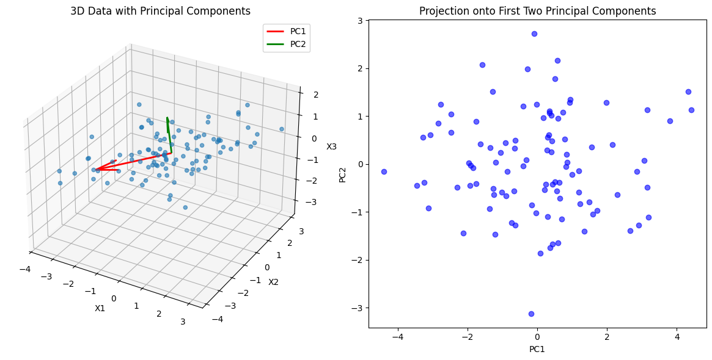
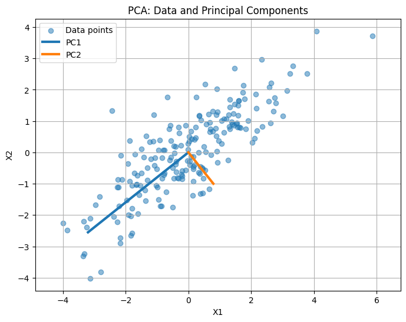

Intiutions#
1. The Problem PCA Solves#
Imagine you have a dataset with multiple features (dimensions). High-dimensional data can be:
Hard to visualize
Redundant (features correlated)
Noisy
Goal: Find a smaller set of new axes (directions) that capture most of the important information (variance) in the data.
2. The Core Idea#
PCA finds new axes (principal components) that:
Are linear combinations of the original features.
Are orthogonal (uncorrelated) to each other.
Capture the maximum variance along the first axis, then the next maximum along the second, and so on.
💡 Intuition: “Reorient the data along directions where it spreads out the most.”
3. Geometric Intuition#
Imagine a 2D cloud of points (like a blob).
You want to fit a straight line that best “summarizes” the blob.
Step 1: Find the direction along which the cloud is most stretched → First principal component (PC1)
Step 2: Find a perpendicular direction that captures the next largest spread → Second principal component (PC2)
In 3D, think of fitting a plane first (PC1 + PC2), then the remaining dimension captures minimal variance (PC3).
PCA is like finding the axes of an ellipsoid that best fit your data.
4. Variance and Information#
PCA assumes:
Directions with high variance carry the most “information.”
Directions with low variance might just be noise.
So by keeping only the top few principal components, we compress the data while keeping most of the important patterns.
5. Algebraic Intuition#
Center the data around 0.
Compute the covariance matrix → captures relationships between features.
Find eigenvectors of the covariance matrix → these are the principal components (directions).
Eigenvalues → tell you how much variance is captured by each component.
Intuition: Eigenvectors are the “best-fit axes,” eigenvalues are the “stretchiness” along each axis.
6. Dimensionality Reduction#
Suppose original data has 10 features.
If 90% of variance is captured in the first 2 PCs, you can represent the data in 2D instead of 10D.
You’ve reduced dimensionality without losing much information.
7. Visual Analogy#
Imagine shining a flashlight on a 3D object:
The shadow on a wall captures most of the shape in 2D.
PCA is like finding the best wall to cast that shadow.
Key Takeaways
PCA = Reorient data along directions of maximal spread.
First PC = direction of highest variance.
Next PCs = orthogonal directions of decreasing variance.
PCA = compress data → reduce noise and redundancy.
import numpy as np
import matplotlib.pyplot as plt
from mpl_toolkits.mplot3d import Axes3D
# Generate sample 3D data
np.random.seed(42)
n_samples = 100
mean = [0, 0, 0]
cov = [[3, 2, 0.5],
[2, 2, 0],
[0.5, 0, 1]]
X = np.random.multivariate_normal(mean, cov, n_samples)
# Compute PCA
X_meaned = X - np.mean(X, axis=0)
cov_matrix = np.cov(X_meaned.T)
eigenvalues, eigenvectors = np.linalg.eig(cov_matrix)
idx = np.argsort(eigenvalues)[::-1]
eigenvectors = eigenvectors[:, idx]
eigenvalues = eigenvalues[idx]
# Top 2 components for projection
W = eigenvectors[:, :2]
X_pca = X_meaned.dot(W)
# Plot 3D scatter and PCA vectors
fig = plt.figure(figsize=(12,6))
# 3D Scatter
ax = fig.add_subplot(121, projection='3d')
ax.scatter(X[:,0], X[:,1], X[:,2], alpha=0.6)
origin = np.mean(X, axis=0)
for i in range(2):
vec = eigenvectors[:,i] * 3 # scale for visibility
ax.quiver(origin[0], origin[1], origin[2],
vec[0], vec[1], vec[2],
color=['r','g'][i], linewidth=2, label=f'PC{i+1}')
ax.set_title('3D Data with Principal Components')
ax.set_xlabel('X1')
ax.set_ylabel('X2')
ax.set_zlabel('X3')
ax.legend()
# 2D Projection
ax2 = fig.add_subplot(122)
ax2.scatter(X_pca[:,0], X_pca[:,1], alpha=0.6, color='b')
ax2.set_xlabel('PC1')
ax2.set_ylabel('PC2')
ax2.set_title('Projection onto First Two Principal Components')
plt.tight_layout()
plt.show()

1. Data Representation#
Suppose you have a dataset with \(n\) samples and \(p\) features:
Each row = a sample
Each column = a feature
Step 1: Center the data (subtract the mean of each column):
where \(\mu\) is the mean vector of the features.
This ensures PCA captures variance around the origin, not the mean.
2. Variance Maximization Problem#
PCA wants to find a direction vector \(w\) such that if you project the data onto it, the variance is maximized.
Projection of a sample \(x_i\) onto \(w\):
Variance along \(w\) for all samples:
where \(\Sigma\) is the covariance matrix:
3. Optimization Problem#
We want to maximize variance along \(w\) subject to \(||w|| = 1\) (unit vector constraint):
This is a classic eigenvalue problem.
4. Solution via Eigenvectors#
Using linear algebra:
\(w\) = eigenvector of \(\Sigma\) → principal component direction
\(\lambda\) = eigenvalue → amount of variance along \(w\)
Interpretation:
First PC = eigenvector with largest eigenvalue
Second PC = eigenvector with second largest eigenvalue, orthogonal to first
And so on…
5. Projection onto Principal Components#
Once eigenvectors are found, we can project data onto them:
\(W = [w_1, w_2, ..., w_k]\) = matrix of top \(k\) eigenvectors
\(Z\) = lower-dimensional representation preserving maximum variance
Mathematically, PCA converts the covariance matrix into a diagonal form in the new basis of eigenvectors. All off-diagonal correlations are removed.
6. Connection to SVD#
An alternative approach uses Singular Value Decomposition (SVD):
Columns of \(V\) = principal components (directions)
Diagonal entries of \(\Sigma\) = “strength” of each component
SVD is often more stable numerically than eigen-decomposition.
Summary
Step |
Concept |
|---|---|
Centering |
Subtract mean so variance is meaningful |
Covariance |
Measures how features vary together |
Eigenvectors |
Directions of maximum variance (principal components) |
Eigenvalues |
Variance captured by each PC |
Projection |
Express data in new orthogonal basis to reduce dimensions |
Bottom line: PCA is about finding a new set of orthogonal axes (eigenvectors) that diagonalize the covariance matrix so that most variance lies along the first few axes.
import numpy as np
import matplotlib.pyplot as plt
# Generate synthetic 2D data
np.random.seed(42)
mean = [0, 0]
cov = [[3, 2], [2, 2]] # covariance matrix to introduce correlation
X = np.random.multivariate_normal(mean, cov, 200)
# PCA computation
X_centered = X - X.mean(axis=0)
cov_matrix = np.cov(X_centered, rowvar=False)
eigenvalues, eigenvectors = np.linalg.eigh(cov_matrix) # eigenvectors and eigenvalues
idx = np.argsort(eigenvalues)[::-1]
eigenvalues = eigenvalues[idx]
eigenvectors = eigenvectors[:, idx]
# Plotting the data and principal components
plt.figure(figsize=(8, 6))
plt.scatter(X[:, 0], X[:, 1], alpha=0.5, label='Data points')
# Draw principal components
for i in range(2):
vec = eigenvectors[:, i] * np.sqrt(eigenvalues[i]) * 2 # scale for visibility
plt.plot([0, vec[0]], [0, vec[1]], lw=3, label=f'PC{i+1}')
plt.xlabel('X1')
plt.ylabel('X2')
plt.title('PCA: Data and Principal Components')
plt.legend()
plt.grid(True)
plt.axis('equal')
plt.show()

The scatter plot shows the original 2D data points.
The thick lines represent the principal components (PC1 and PC2):
PC1 points along the direction of maximum variance (longest spread of the data).
PC2 is orthogonal to PC1 and captures the next largest variance.
You can see how PCA “reorients” the axes to align with the data’s spread.
Intuition: Projecting the data onto these axes preserves most of the variance while reducing redundancy, which is the essence of PCA.